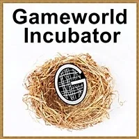
GAMEWORLD
INCUBATOR
- …
GAMEWORLD
INCUBATOR
- …
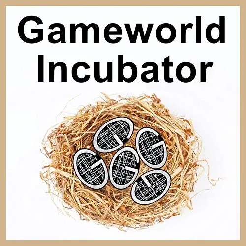
- What Is Gameworld Incubator? - ### Building Gaian Gameworlds is perhaps the most important and valuable skillset in the 21st Century.- ### Why?- ### Because 19th and 20th Century Gameworlds are exterminating life on Earth at the fastest possible rate. They have no intention at all of ever cleaning up their messes.- ### Gameworld Incubator is an intensive 12-week online team effort to establish a beachhead into a new future for humanity - helping each other build out and inhabit regenerative- Archearchy (archived — not captured)- Gameworlds,- Gian Gameworlds.- ### This is something modern culture knows- nothingabout. - You can change the future right now by building and occupying gameworld space for new qualities of interactions.- # - Clinton Callahan - # Gameworld Incubator Basics- ### there is so much fun stuff to learn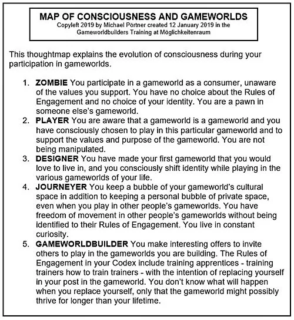
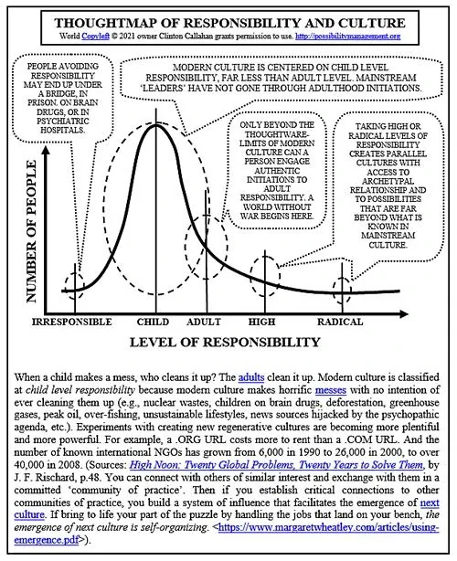
- (47 minutes) - (48 minutes)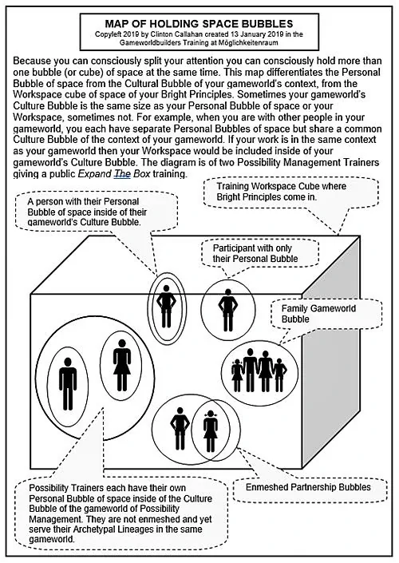
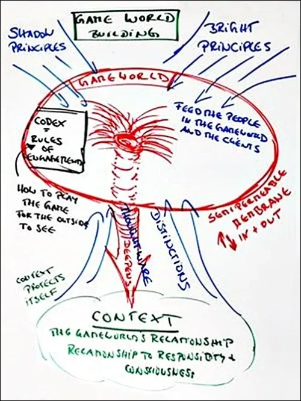
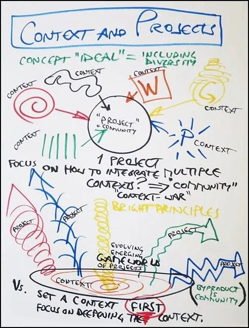
- # Gameworld Incubator Hints- ### IT ONLY TAKES ONE...- If you are not reacting, why would the other person react to you? - If you do not defend your opinions, then the other person does not have to defend theirs. They are finally safe around you. You can be together. - If your Gremlin is not attacking the other person for their Box being different from yours, then their Gremlin does not have to attack your Box. The Gremlins can relax and you can find a completely new way of being together. - ### LEARN TO- FLY - # Gameworld Incubator #1 Videos- After listening to this entire recording, please enter Matrix Code NCRADIO1.79 in your free account at - StartOver.xyz Game. Login here: https://login.startover.xyz. Thank you! - Gameworld Incubator # 2/12- After listening to this entire recording, please enter Matrix Code NCRADIO1.80 in your free account at - StartOver.xyz Game. Login here: https://login.startover.xyz. Thank you!- Gameworld Incubator # 3/12- After listening to this entire recording, please enter Matrix Code NCRADIO1.81 in your free account at - StartOver.xyz Game. Login here: https://login.startover.xyz. Thank you!- Gameworld Incubator # 4/12- After listening to this entire recording, please enter Matrix Code NCRADIO1.82 in your free account at - StartOver.xyz Game. Login here: https://login.startover.xyz. Thank you!- Gameworld Incubator # 5/12- After listening to this entire recording, please enter Matrix Code NCRADIO1.84 in your free account at - StartOver.xyz Game. Login here: https://login.startover.xyz. Thank you!- Gameworld Incubator # 6/12- After listening to this entire recording, please enter Matrix Code NCRADIO1.87 in your free account at - StartOver.xyz Game. Login here: https://login.startover.xyz. Thank you!- Gameworld Incubator # 8/12- After listening to this entire recording, please enter Matrix Code NCRADIO2.03 in your free account at - StartOver.xyz Game. Login here:8https://login.startover.xyz. Thank you!- Gameworld Incubator # 9/12- After listening to this entire recording, please enter Matrix Code NCRADIO2.24 in your free account at - StartOver.xyz Game. Login here: https://login.startover.xyz. Thank you!- Gameworld Incubator # 10/12- After listening to this entire recording, please enter Matrix Code NCRADIO2.25 in your free account at - StartOver.xyz Game. Login here: https://login.startover.xyz. Thank you!- Gameworld Incubator # 11/12- After listening to this entire recording, please enter Matrix Code NCRADIO2.26 in your free account at - StartOver.xyz Game. Login here: https://login.startover.xyz. Thank you!- Gameworld Incubator # 12/12- After listening to this entire recording, please enter Matrix Code NCRADIO2.27 in your free account at - StartOver.xyz Game. Login here: https://login.startover.xyz. Thank you!- Gameworld Incubator # 13/12- After listening to this entire recording, please enter Matrix Code NCRADIO2.28 in your free account at - StartOver.xyz Game. Login here: https://login.startover.xyz. Thank you!- Gameworld Incubator # 13/12- After listening to this entire recording, please enter Matrix Code NCRADIO2.29 in your free account at - StartOver.xyz Game. Login here: https://login.startover.xyz. Thank you! - # Gameworld Incubator Experiments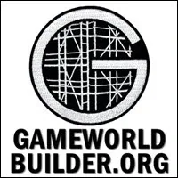
- SHIFT IDENTITY INTO BEING A GAMEWORLD BUILDER- Matrix Code - GAMEINCU.01- For one whole week tell at least three people per day that you are a Gameworld Builder. To substantiate your claim explain to at least one person in each of those days, the distinction Gameworld. You might want to review the - Gameworld Builderwebsite.- After doing this Experiment, please register Matrix Code GAMEINCU.01 in your free account at - StartOver.xyz. This Experiment is worth 1 Matrix Point. - DESIGN A GAMEWORLD FOR GAIA- Matrix Code - GAMEINCU.02- Open a new page of your - Beep!Book- If you have an online gameworld, that means drawing where all the electricity comes from, the minerals used for your computer, the means of travel, the non-Gaian Gameworlds you utilize to market or communicate your gameworld, and so on. - Then change the design so that net gain is FOR Gaia and explain that net gain in the Gameworld on a video and send the video to the many many people behind the - Possibility Management TV.- After doing this Experiment, please register Matrix Code GAMEINCU.02 in your free account at - StartOver.xyz. This Experiment is worth 1 Matrix Point. - PRACTICE BEING A GAMEWORLD CONSULTANT AS ONE OF YOUR GAMEWORLD SERVICES- Matrix Code - GAMEINCU.03- For one week three times a day, notice when people that you know or you don't know are talking about a Gameworld, either the one they are building or trying to build, or one they are complaining about like the government, or the school, or the supermarket, or the tax system. - For those three times a day you become a Gameworld Consultant. - Your job is to only give people really one next step, either towards redesigning the gameworld they are complaining about or towards creating the gameworld they want to create. You scan the person's - Matrixby sharp paying attention in all- 5 Bodiesto what they are saying, how they are saying it, what are the assumptions they using in their saying, what dangerous and empowering questions are they not asking.- That is a total of 21 people, and for each of the person you give a completely different new step. You cannot repeat any of steps already given as a consultant. - At the end of the consulting time, you give them your card, or your contact details. - After doing this Experiment, please register Matrix Code GAMEINCU.03 in your free account at - StartOver.xyz. This Experiment is worth 3 Matrix Points. - START YOUR MEETINGS FROM A GAMEWORLD-FREE SPACE- Matrix Code - GAMEINCU.04- Please review the - Noticingand the- Become Presentwebsites enough that you can notice fine experiential impulses in the present. This experiment lasts at least 2-3 days.- Part 1: Look in shadowy dark places. On the first day you only look in dark places instead of shiny bright objects, listen to the silences between the sounds, and make notes in your beep book about what you find in the dark and shadowy places that other people are not interested in looking at.
- Part 2: Decide that it is ok to experience 30-70% intense - Fearin Part 3 of the experiment.
- Part 3: Move slowly or pause often in your day. Notice the space when one Gameworld ends and before another Gameworld takes over. Oftentimes a Gap in Gameworlds happens within a doorframe. One one side of the door is one Gameworld, on the other side of the door is another Gameworld, and at the doorframe no Gameworld applies.
- Part 4: After you have detected 13 gaps between Gameworlds, choose a particularly clear gap and go stand in there for 15 to 20min. During that time, click your clicker and capture an energetic sample of the Gap in Gameworlds, the gameworldless space. Put it in your - Bag of Thingsso that from then on until the rest of your life, whenever you want to access a Gap in Gameworlds you have a seed of that gameworldless space that you can call forth in whatever Gameworld you are in.
- Part 5: In an evolutionary Gameworld pull out the energetic gap in the Gameworld and call it forth, tell people what you are going to do before you do it, and have a 30-45min conversation with people in that gap. One cannot say what the conversation is about, in fact don’t say or let them say what it is about so that the Gap is available in the space.
- Part 6: Write an article about the conversation that you have in Gameworld-free space, write about the value of it, and what sort of power and knowledge you gain there.
- After doing this Experiment, please register Matrix Code GAMEINCU.04 in your free account at - StartOver.xyz. This Experiment is worth 1 Matrix Point.
- DESIGN A GAMEWORLD FOR GAIA- Matrix Code - GAMEINCU.02- Open a new page of your - Beep!Book- If you have an online gameworld, that means drawing where all the electricity comes from, the minerals used for your computer, the means of travel, the non-Gaian Gameworlds you utilize to market or communicate your gameworld, and so on. - Then change the design so that net gain is FOR Gaia and explain that net gain in the Gameworld on a video and send the video to the many many people behind the - Possibility Management TV.- After doing this Experiment, please register Matrix Code GAMEINCU.02 in your free account at - StartOver.xyz. This Experiment is worth 1 Matrix Point. - PRACTICE BEING A GAMEWORLD CONSULTANT AS ONE OF YOUR GAMEWORLD SERVICES- Matrix Code - GAMEINCU.03- For one week three times a day, notice when people that you know or you don't know are talking about a Gameworld, either the one they are building or trying to build, or one they are complaining about like the government, or the school, or the supermarket, or the tax system. - For those three times a day you become a Gameworld Consultant. - Your job is to only give people really one next step, either towards redesigning the gameworld they are complaining about or towards creating the gameworld they want to create. You scan the person's - Matrixby sharp paying attention in all- 5 Bodiesto what they are saying, how they are saying it, what are the assumptions they using in their saying, what dangerous and empowering questions are they not asking.- That is a total of 21 people, and for each of the person you give a completely different new step. You cannot repeat any of steps already given as a consultant. - At the end of the consulting time, you give them your card, or your contact details. - After doing this Experiment, please register Matrix Code GAMEINCU.03 in your free account at - StartOver.xyz. This Experiment is worth 3 Matrix Points. - START YOUR MEETINGS FROM A GAMEWORLD-FREE SPACE- Matrix Code - GAMEINCU.04- Please review the - Noticingand the- Become Presentwebsites enough that you can notice fine experiential impulses in the present. This experiment lasts at least 2-3 days.- Part 1: Look in shadowy dark places. On the first day you only look in dark places instead of shiny bright objects, listen to the silences between the sounds, and make notes in your beep book about what you find in the dark and shadowy places that other people are not interested in looking at.
- Part 2: Decide that it is ok to experience 30-70% intense - Fearin Part 3 of the experiment.
- Part 3: Move slowly or pause often in your day. Notice the space when one Gameworld ends and before another Gameworld takes over. Oftentimes a Gap in Gameworlds happens within a doorframe. One one side of the door is one Gameworld, on the other side of the door is another Gameworld, and at the doorframe no Gameworld applies.
- Part 4: After you have detected 13 gaps between Gameworlds, choose a particularly clear gap and go stand in there for 15 to 20min. During that time, click your clicker and capture an energetic sample of the Gap in Gameworlds, the gameworldless space. Put it in your - Bag of Thingsso that from then on until the rest of your life, whenever you want to access a Gap in Gameworlds you have a seed of that gameworldless space that you can call forth in whatever Gameworld you are in.
- Part 5: In an evolutionary Gameworld pull out the energetic gap in the Gameworld and call it forth, tell people what you are going to do before you do it, and have a 30-45min conversation with people in that gap. One cannot say what the conversation is about, in fact don’t say or let them say what it is about so that the Gap is available in the space.
- Part 6: Write an article about the conversation that you have in Gameworld-free space, write about the value of it, and what sort of power and knowledge you gain there.
- After doing this Experiment, please register Matrix Code GAMEINCU.04 in your free account at - StartOver.xyz. This Experiment is worth 1 Matrix Point. - BRING 100% CO-CREATION INTO YOUR GAMEWORLD- Matrix Code - GAMEINCU.05- Most human beings use their - Boxand- Gremlinto buffer themselves against making a full commitment to any Gameworld they are playing. This way, they can complain, or blame, or make excuses for like- "this doesn't really apply to me”, or- “I don't have any other choice”, or- “it's not really my fault”.- List in your Beep!Book 10 Gameworlds that you are involved in, in your daily life. - Choose one of them and take a stand in public to committing 100% to co-creating and supporting the aliveness of one of the 10 Gameworlds, whether this involves time, energy, money, and creation or invention power, or your network of friends, etc. - Bring your resources 100% to nurture that Gameworld. - If someone asks you why your change of attitude explain that you decided to either commit to co-creating the Gameworlds that you play in or exit them completely. - After doing this Experiment, please register Matrix Code GAMEINCU.05 in your free account at - StartOver.xyz. This Experiment is worth 1 Matrix Point.
- BRING 100% CO-CREATION INTO YOUR GAMEWORLD- Matrix Code - GAMEINCU.05- Most human beings use their - Boxand- Gremlinto buffer themselves against making a full commitment to any Gameworld they are playing. This way, they can complain, or blame, or make excuses for like- "this doesn't really apply to me”, or- “I don't have any other choice”, or- “it's not really my fault”.- List in your Beep!Book 10 Gameworlds that you are involved in, in your daily life. - Choose one of them and take a stand in public to committing 100% to co-creating and supporting the aliveness of one of the 10 Gameworlds, whether this involves time, energy, money, and creation or invention power, or your network of friends, etc. - Bring your resources 100% to nurture that Gameworld. - If someone asks you why your change of attitude explain that you decided to either commit to co-creating the Gameworlds that you play in or exit them completely. - After doing this Experiment, please register Matrix Code GAMEINCU.05 in your free account at - StartOver.xyz. This Experiment is worth 1 Matrix Point.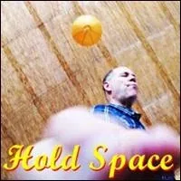
- PRACTICE SPACEHOLDING FOR SHORT-LIVED GAMEWORLDS- Matrix Code - GAMEINCU.06- This experiment is ideally made in a Possibility Team or at least in a group of minimum three people. - Step 1: As an introduction to this experiment you start with explaining and giving examples of what Gameworlds are. - Step 2: - You get 15min with your group of three to invent a totally new Gameworld that you never played before, one that you are going to fully play in for another 15min. It doesn’t matter what is the purpose, context, what the rules of engagement are. What matters is that you build it from A-Z in 15minutes, and then you hold space for that Gameworld and are totally committed and submersed in it for the whole 15min, so make sure to put the timer on it. - As a spaceholder come to the end by destroying the Gameworld. - If you have time, create a brand new one, that is completely different, with different purpose, values, and rules of engagement. - Step 3: If at the end of the 15min you realise that your first Gameworld’s purpose was a - Shadow Purpose(Competition, Superiority, Being Right/Making Wrong, etc), then the challenge of the second Gameworld is to play High Drama. Design the new Gameworld and play in such a way that in the end, with such structure, there is- Winning Happening,- Intimacy, Collaboration, etc.- Step 4: Keep 15-20min at the end to have a noticing check-out about the experiment of spaceholding short-lived Gameworlds. - After doing this Experiment, please register Matrix Code GAMEINCU.06 in your free account at - StartOver.xyz. This Experiment is worth 1 Matrix Point. - EXPLORE THE 5 LEVELS OF GAMEWORLD RESPONSIBILITY- Matrix Code - GAMEINCU.07- Context might be consciously or unconsciously set. Context is expressed in things that explicitly or implicitly define the rules of engagement including - purpose, who is bearing the cost of things, duration of the Gameworld, what qualities, aspects, considerations of the space is used for the Gameworld, how things will go, who does it impact, why doing things one way or the other who pays for what, who decides what.- Week 1: Notice Context. - Notice how other people establish context in a conversation, in a meeting, or in a space. It could be through saying something at the beginning, or some other signage. Notice if the context of the conversation or space is assumed. Then notice how context shows up and notice how it does not show up, notice how the context is maintained or of it shifts throughout the meeting, conversation, session. Notice if there is mixed context in the Gameworld and what are the consequences of it. Notice what happens. And then use this information as your context detector. - Week 2: You define the context. - This is best done in a Possibility Team of at least three people. As the spaceholder you create 5 conversations, each one based in one of the levels of responsibility distinguished below, for 10-15min each. In each of the conversations you define the purpose of the conversation. - Zero Level of responsibility. - Child Level of Responsibility. - Adult Level of Responsibility. - High Level of Responsibility. - Radical Level of Responsibility. - Write an article about what you noticed with each of the 5 conversations, publish your article, and send it to the - StartOver.xyz team.- After doing this Experiment, please register Matrix Code GAMEINCU.07 in your free account at - StartOver.xyz. This Experiment is worth 1 Matrix Point. - NAVIGATE TO THE EDGE OF YOUR GAMEWORLD SPACE- Matrix Code - GAMEINCU.08- For three times this week meet with people who are accustomed to meeting with each other in a particular context. Arrange that you have permission to hold and navigate a 30-45 min discovery journey within the context of this group. - Start by asking people to go with you to an edge of that Gameworld conversation space and stand with them at that edge. (Note: you can tell you are at the edge when you can both look inwards at your Gameworld and outwards at other possibilities.) - With your team answer the questions: - Why is the edge in this Gameworld space exactly here? What is the benefit, what is the fear about? - Who does it flow power to? - Who gets to be in charge in it? - What awareness does it block? - What thoughtware is allowed? - What thoughtware is not allowed, does it include beliefs? - What assumptions, expectations, and superstitions form the edge? - Stay with everyone in silence for one whole minute, at the edge, feeling the discomfort of being that close to the edge. - After the minute in over, invite someone to ask a dangerous question that takes the whole group to another edge of the Gameworld space and do the same process. Find three edges in total. At the end, thank everyone in the group for having taken this daring journey to three edges and hand the spaceholding back to the ordinary spaceholder. - After doing this Experiment, please register Matrix Code GAMEINCU.08 in your free account at - StartOver.xyz. This Experiment is worth 1 Matrix Point. - DISTILL THE BRIGHT PRINCIPLES OF YOUR GAMEWORLD- Matrix Code - GAMEINCU.09- Note: Before the experiment Read the - Bright Principleswebsite and ask an experienced- Possibilitatorto take you through the initiation of Distilling your Bright Principles and having them checked by an experienced certified- Expand the Box Trainer. This process is better done in a team.- Arrange to meet with the members of the Gameworld and make sure that the core members are present. For this you might first need to identify who are the core members of the Gameworld. The core members are the ones that without them the Gameworld would not exist. This is a simple and practical realisation, and not a naive fantasy that every member is a core member simply because they participate in the Gameworld. Their presence as a core is a direct and practical expression of their gifting of their time and energy and inspiration and attention to the manifestation of that Gameworld into being and unfolding. These people are actually the core Spaceholders of that Gameworld. - Get the people to gather in a circle with pen and paper. - Create an clear initiation space where you call your own personal set of Bright Principles into the space and sense their arrival. Then call the whole of the Bright Principles into the space in all its names and nameless, and facets known and unknown. You do this not from your mind naming them or imagining them. You do this with your clear intention and will. Call them and sense them present in the space. If you do not sense them you might to shift yourself so they have space to be in the space. If you are occupying too much of the space with your survival concerns if you are going to do a good job, or if the other will understand or be entertained, then the Bright Principles will not find enough space to come through. If you still do not sense them, hold an appreciative, welcome, and open attitude towards them being there, without certainty or assurance. - Go through the distilling process described in the - Bright Principleswebsite list of questions so that one by one, each member writes down their answers.- After checking each member's set of 3-5 Bright Principles (with one sword, one heart and one soul Principle), write them all on flipchart paper. - Have a 10minutes break. - Then, navigate the space with the whole group, and circle the Principles that are more clearly showing up over and over, or that in the space are sensed as a match for the Purpose of the Gameworld. Continue to navigate the group into refining the exact word for each Bright Principle that represent with accuracy what is the service of the Gameworld in the world, which is guaranteed to not be comfortable for the - Boxesin the room. Keep the energy of the space rolling, and make sure to empower the group intelligence towards distillation asking for examples of how the Gameworld provides a particular service expressing a particular quality and how does the gameworld serve and manifests the particular Bright Principle. The space fills with a special kind of tingling, alertness, joy and fear. Keep the space alive and out of mental or philosophical discussion, and into Aliveness, Discovery, Clarity and Alignment.- When you have a clear 3-5 set of Bright Principles of the whole Gameworld you pause. Let those Principles tingle especially in the space. You might want to offer a space for the group to consciously choose those Bright Principles where the whole group or the main spaceholders call in the 3-5 Bright Principles with Clarity and Integrity, one Bright Principle per person and the rest of the group holds space and senses them arrive more emphatically in the space. In alternative, arrange for the group to work for a week or two as if that was the final set and come back for a meeting for further distilling and refining. Be sure to not allow Gremlin confusion or Box neurosis or Perfectionism to block the choosing of a working set of Bright Principles. - Further experimentation: Get the Gameworld group - in particular the core spaceholders - in groups of three. Have each group create 2-3 experiments for that week to effectively create and more clearly experience one or two of the Bright Principles happening. - After doing this Experiment, please register Matrix Code GAMEINCU.09 in your free account at - StartOver.xyz. This Experiment is worth 11 Matrix Points.
- DISTILL THE BRIGHT PRINCIPLES OF YOUR GAMEWORLD- Matrix Code - GAMEINCU.09- Note: Before the experiment Read the - Bright Principleswebsite and ask an experienced- Possibilitatorto take you through the initiation of Distilling your Bright Principles and having them checked by an experienced certified- Expand the Box Trainer. This process is better done in a team.- Arrange to meet with the members of the Gameworld and make sure that the core members are present. For this you might first need to identify who are the core members of the Gameworld. The core members are the ones that without them the Gameworld would not exist. This is a simple and practical realisation, and not a naive fantasy that every member is a core member simply because they participate in the Gameworld. Their presence as a core is a direct and practical expression of their gifting of their time and energy and inspiration and attention to the manifestation of that Gameworld into being and unfolding. These people are actually the core Spaceholders of that Gameworld. - Get the people to gather in a circle with pen and paper. - Create an clear initiation space where you call your own personal set of Bright Principles into the space and sense their arrival. Then call the whole of the Bright Principles into the space in all its names and nameless, and facets known and unknown. You do this not from your mind naming them or imagining them. You do this with your clear intention and will. Call them and sense them present in the space. If you do not sense them you might to shift yourself so they have space to be in the space. If you are occupying too much of the space with your survival concerns if you are going to do a good job, or if the other will understand or be entertained, then the Bright Principles will not find enough space to come through. If you still do not sense them, hold an appreciative, welcome, and open attitude towards them being there, without certainty or assurance. - Go through the distilling process described in the - Bright Principleswebsite list of questions so that one by one, each member writes down their answers.- After checking each member's set of 3-5 Bright Principles (with one sword, one heart and one soul Principle), write them all on flipchart paper. - Have a 10minutes break. - Then, navigate the space with the whole group, and circle the Principles that are more clearly showing up over and over, or that in the space are sensed as a match for the Purpose of the Gameworld. Continue to navigate the group into refining the exact word for each Bright Principle that represent with accuracy what is the service of the Gameworld in the world, which is guaranteed to not be comfortable for the - Boxesin the room. Keep the energy of the space rolling, and make sure to empower the group intelligence towards distillation asking for examples of how the Gameworld provides a particular service expressing a particular quality and how does the gameworld serve and manifests the particular Bright Principle. The space fills with a special kind of tingling, alertness, joy and fear. Keep the space alive and out of mental or philosophical discussion, and into Aliveness, Discovery, Clarity and Alignment.- When you have a clear 3-5 set of Bright Principles of the whole Gameworld you pause. Let those Principles tingle especially in the space. You might want to offer a space for the group to consciously choose those Bright Principles where the whole group or the main spaceholders call in the 3-5 Bright Principles with Clarity and Integrity, one Bright Principle per person and the rest of the group holds space and senses them arrive more emphatically in the space. In alternative, arrange for the group to work for a week or two as if that was the final set and come back for a meeting for further distilling and refining. Be sure to not allow Gremlin confusion or Box neurosis or Perfectionism to block the choosing of a working set of Bright Principles. - Further experimentation: Get the Gameworld group - in particular the core spaceholders - in groups of three. Have each group create 2-3 experiments for that week to effectively create and more clearly experience one or two of the Bright Principles happening. - After doing this Experiment, please register Matrix Code GAMEINCU.09 in your free account at - StartOver.xyz. This Experiment is worth 11 Matrix Points. - ACCESS THE BRIGHT PRINCIPLES OF YOUR GAMEWORLD- Matrix Code - GAMEINCU.10- Do this experiment after you have distilled the Bright Principles of the Gameworld. - Meet with members of the Gameworld and ask 3, 4 or 5 different people to call out loud each of the Bright Principles of the Gameworld so they are solidly called into the space. Consider your Interesting Items of Interest in which this meeting is called into order and choose one of the Bright Principles and radically rely on it to provide with viable possibilities. - Procedure: ask for a volunteer to become the speaker for one the Bright Principles. They stand and turn around 360º and say - “I am now Diligence”or- "I am now Clarity". Then invite members to dip into the treasury and the wealth that the Bright Principle represents asking practical and implementable questions. Whatever the Bright Principle person says should be written down word for word.- Go on for 10-15min with continuous questions. If the problem at hand is not handled, ask a second volunteer to represent a second Bright Principle and proceed as above. - Note: This a - Generative Space, meaning a space designed for invention and creation. It is not an- Analytic Space,so do NOT permit critical or cynical comments from anyone while in the generative phase. That would be like wanting a bear to come give you its honey while punching it in the nose. You just don’t do that and live.- Wrap up: Afterwards develop 3 practical implementations given by the Bright Principles. - After doing this Experiment, please register Matrix Code GAMEINCU.10 in your free account at - StartOver.xyz. This Experiment is worth 1 Matrix Point. - TAP YOUR GAMEWORLD DIRECTLY INTO THE WISDOM OF GAIA- Matrix Code - GAMEINCU.11- Gaiais the local field of Consciousness of planet Earth. As the local field of consciousness of the planet it in a wide - and deep- source of wisdom that you can tap into, commune with, bask in, and pour Love into.- If you create a conscious communicative relationship with Gaia, you make stronger the empowerment and Love that Gaia already has with you. You might be surprised and humbled at the clarity and Love with which Gaia speaks back. - For this experiment arrange to meet with the people with whom you are building the Gameworld with or with the people of the Gameworld you are consulting. - Being the people into a circle, online or offline, and make sure that every individual, every spaceholder for the Gameworld has their - Centre, their- Bubble (archived — not captured), and their- Grounding Chord. As the spaceholder you declare the golden cube of energetic space of the Gameworld which defines the context, the purpose, the rules of engagement, who is in that space and who is not, where it distinguishes from another Gameworld, etc. As you do this, please tell all members to also click their clickers and declare the golden cubes by tapping into the space already created. The spaceholder of the energetic space declares a big black grounding chord from the energetic space 20-40cm diameter black which grounds the Gameworld to centre of Gaia.- Ask each person in the Gameworld to send their question down into the chord, for example: - "Gaia what do you have for …(name of the Gameworld)...?”- The grounding chord is 2-way chord. Gaia will answer through the Gameworld grounding chord back to each person, and each person writes down the answer they got clearly and specifically, and with actual details. - Afterwards develop practical implementations given by Gaia. - After doing this Experiment, please register Matrix Code GAMEINCU.11 in your free account at - StartOver.xyz. This Experiment is worth 1 Matrix Point.
- ACCESS THE BRIGHT PRINCIPLES OF YOUR GAMEWORLD- Matrix Code - GAMEINCU.10- Do this experiment after you have distilled the Bright Principles of the Gameworld. - Meet with members of the Gameworld and ask 3, 4 or 5 different people to call out loud each of the Bright Principles of the Gameworld so they are solidly called into the space. Consider your Interesting Items of Interest in which this meeting is called into order and choose one of the Bright Principles and radically rely on it to provide with viable possibilities. - Procedure: ask for a volunteer to become the speaker for one the Bright Principles. They stand and turn around 360º and say - “I am now Diligence”or- "I am now Clarity". Then invite members to dip into the treasury and the wealth that the Bright Principle represents asking practical and implementable questions. Whatever the Bright Principle person says should be written down word for word.- Go on for 10-15min with continuous questions. If the problem at hand is not handled, ask a second volunteer to represent a second Bright Principle and proceed as above. - Note: This a - Generative Space, meaning a space designed for invention and creation. It is not an- Analytic Space,so do NOT permit critical or cynical comments from anyone while in the generative phase. That would be like wanting a bear to come give you its honey while punching it in the nose. You just don’t do that and live.- Wrap up: Afterwards develop 3 practical implementations given by the Bright Principles. - After doing this Experiment, please register Matrix Code GAMEINCU.10 in your free account at - StartOver.xyz. This Experiment is worth 1 Matrix Point. - TAP YOUR GAMEWORLD DIRECTLY INTO THE WISDOM OF GAIA- Matrix Code - GAMEINCU.11- Gaiais the local field of Consciousness of planet Earth. As the local field of consciousness of the planet it in a wide - and deep- source of wisdom that you can tap into, commune with, bask in, and pour Love into.- If you create a conscious communicative relationship with Gaia, you make stronger the empowerment and Love that Gaia already has with you. You might be surprised and humbled at the clarity and Love with which Gaia speaks back. - For this experiment arrange to meet with the people with whom you are building the Gameworld with or with the people of the Gameworld you are consulting. - Being the people into a circle, online or offline, and make sure that every individual, every spaceholder for the Gameworld has their - Centre, their- Bubble (archived — not captured), and their- Grounding Chord. As the spaceholder you declare the golden cube of energetic space of the Gameworld which defines the context, the purpose, the rules of engagement, who is in that space and who is not, where it distinguishes from another Gameworld, etc. As you do this, please tell all members to also click their clickers and declare the golden cubes by tapping into the space already created. The spaceholder of the energetic space declares a big black grounding chord from the energetic space 20-40cm diameter black which grounds the Gameworld to centre of Gaia.- Ask each person in the Gameworld to send their question down into the chord, for example: - "Gaia what do you have for …(name of the Gameworld)...?”- The grounding chord is 2-way chord. Gaia will answer through the Gameworld grounding chord back to each person, and each person writes down the answer they got clearly and specifically, and with actual details. - Afterwards develop practical implementations given by Gaia. - After doing this Experiment, please register Matrix Code GAMEINCU.11 in your free account at - StartOver.xyz. This Experiment is worth 1 Matrix Point. - BUILD A SUB-GAMEWORLD FOR DECONTAMINATING YOUR HUMAN RESOURCES- Matrix Code - GAMEINCU.12- The Free and Natural adult emerges only after people have - decontaminated (archived — not captured)their- Adult Ego State.- Almost no one in the world has done this so no matter what Gameworld you participate in or create, be assured that there will be contamination in your team. And so there will be contamination in your Gameworld. If you have contamination in your Gameworld, there will be competing commitments and context war, because each of the prevailing non-adult ego states that your team will have at any moment will have their own purpose and needs and designs for the Gameworld. - This experiment is to build a Gameworlds inside your Gameworld with at least 2 other people with whom for 3 months you co-create a sub-gameworld devoted to decontaminating each other so that the free and natural adults in your smaller team can actually emerge in the bigger Gameworld. Build your own value in the Gameworld by taking a stand for a free and natural adult in that Gameworld. You will start spotting what results the non-adult ego states create. During this time the people who ask you “what changed?” are your first clients for decontamination process. Suggest that your team incorporates and oversees the Human Resources department. - Apply all the knowledge and invention and discoveries you found while decontaminating in your smaller team, and invent new experiments from your adult and archetypal ego states. - The smaller gameworld would eventually have everyone in that Gameworld as a client. - (Warning: You will become more valuable in the team. You also might get fired, but it could be the beginning of a new life.To avoid quickly getting fired you might want to assure the support and endorsement of a critical member or core spaceholder of the Gameworld. One way of opening the door of support from that critical member is to reveal clearly the value of having decontamination process happen in the team. This is effectively show by results.) - After doing this Experiment, please register Matrix Code GAMEINCU.12 in your free account at - StartOver.xyz. This Experiment is worth 10 Matrix Points.
- BUILD A SUB-GAMEWORLD FOR DECONTAMINATING YOUR HUMAN RESOURCES- Matrix Code - GAMEINCU.12- The Free and Natural adult emerges only after people have - decontaminated (archived — not captured)their- Adult Ego State.- Almost no one in the world has done this so no matter what Gameworld you participate in or create, be assured that there will be contamination in your team. And so there will be contamination in your Gameworld. If you have contamination in your Gameworld, there will be competing commitments and context war, because each of the prevailing non-adult ego states that your team will have at any moment will have their own purpose and needs and designs for the Gameworld. - This experiment is to build a Gameworlds inside your Gameworld with at least 2 other people with whom for 3 months you co-create a sub-gameworld devoted to decontaminating each other so that the free and natural adults in your smaller team can actually emerge in the bigger Gameworld. Build your own value in the Gameworld by taking a stand for a free and natural adult in that Gameworld. You will start spotting what results the non-adult ego states create. During this time the people who ask you “what changed?” are your first clients for decontamination process. Suggest that your team incorporates and oversees the Human Resources department. - Apply all the knowledge and invention and discoveries you found while decontaminating in your smaller team, and invent new experiments from your adult and archetypal ego states. - The smaller gameworld would eventually have everyone in that Gameworld as a client. - (Warning: You will become more valuable in the team. You also might get fired, but it could be the beginning of a new life.To avoid quickly getting fired you might want to assure the support and endorsement of a critical member or core spaceholder of the Gameworld. One way of opening the door of support from that critical member is to reveal clearly the value of having decontamination process happen in the team. This is effectively show by results.) - After doing this Experiment, please register Matrix Code GAMEINCU.12 in your free account at - StartOver.xyz. This Experiment is worth 10 Matrix Points. - MORPH INTO WHOEVER IS NEEDED IN YOUR GAMEWORLD- GAMEINCU.13- Human beings have a far greater capacity to morph - to change the shape of your being - than they imagine. Please review the website - Parts,- Shift Identity, and- Your Being.- If you change the shape of your Being you force the Universe to interact with you differently. If you change the codex or rules of engagement of your Gameworld, you also force the Universe to interact with your Gameworld differently. - Part 1: Call your team together and ask each person to morph into a different character who may have qualities that are needed in the current situation of your Gameworld. Have them speak and act with accents and body movements from their character. Give them feedback and coaching so they are fully immersed and do not break character. Have them allow full intelligence and resources of their character to come through. - When a person shifts into or out of their character make sure they stand up and turn around 360º and announce they are morphing in or out of their character. It can be useful to name the character and its qualities. - Part 2: As the spaceholder for the meeting of your team, as you meet, you yourself morph into a character who could be useful for the evolution of your Gameworld. Do not tell anyone what you are doing before or after you do it. - Let the resources of your character feed the space and afterwards keep this character on reserve for any future morph that might be valuable for you to do. - After doing this Experiment, please register Matrix Code GAMEINCU.13 in your free account at - StartOver.xyz. This Experiment is worth 1 Matrix Point. - PARTICIPATE IN MEETINGS OF OTHER GAMEWORLDS TO CHECK THEIR CONTEXT- Matrix Code - GAMEINCU.14- Gameworlds exist in a held space. If the space is not consciously held, the gameworld is not present in the space. This experiment is to participate in meetings or events from 3 different gameworlds with your - Beep! Book- Beep! Bookand in part of the space that is not being held write notes in your- Beep! Bookto give feedback and coaching as gameworld consultant at each of the 3 events, ask at least one context clarifying question to test the space navigating skills of the spaceholder. In other words, make Transformational Offers to the gameworld that would benefit the gameworld and notice how your offers are met. How well met are your offers? Note: this is not a Gremlin attack on the spaceholder.- The experiment is to awaken your own attentiveness to spaceholding in other gameworlds so you can apply these space navigation considerations in your own gameworld. - After doing this Experiment, please register Matrix Code - GAMEINCU.14in your free account at- StartOver.xyz. This Experiment is worth 1 Matrix Point. - INVENT NEW POSSIBLE GAMEWORLD RULES- Matrix Code - GAMEINCU.15- This experiment is for you to invoke the power of creation in your fellow human beings. Go around with your Beep! Book and talk to the people who are edgeworkers are on this edge of creation, ask them to choose one gameworld that they would like to reinvent. School, government, culture, air travel, kitchen design, the whole agro-industry gameworld. They choose nay gameworld and ask them to invent one new rule of engagement that would completely change the gameworld in a way that would make them more ecstatic about playing in that game. How would that rule change the game? What are the consequences of that rule in the gameworld? How would they implement the rule? Especially in global gameworlds. Do this for 10 different gameworlds with 10 different people. Take your notes and put them in an article called 'Reinventing A Gameworld With 1 Rule'. Post the article. - After doing this Experiment, please register Matrix Code - GAMEINCU.15in your free account at- StartOver.xyz, giving the link to your article as proof. This Experiment is worth 5 Matrix Point. - EXAMINE YOUR GAMEWORLD FROM THE VIEWPOINT OF A GAP- Matrix Code - GAMEINCU.16- Meet with your core gameworld team for 1.5 hours. The purpose is to review the 9 gaps website. Choose 3 gaps, spend 15-20 minutes in each of those 3 gaps. When you are in one of the gaps you are outside of your gameworld, in a different dimension. When you enter that gap, look back at your gameworld and build your gameworld's resilience. how well can your gameworld endure that gap? consider upgrading your codex or rules of engagement from this new perspective. - For extra credit: invite different members of your core team to navigate a part of the rest of the meeting into 1 or more of the other gaps, to go on a multi-gap gameworld journey together. Note: be sure to return to the space of your gameworld where there are no gaps open at the end of your meeting. Otherwise, someone may experience an unexpected liquid state. - After doing this Experiment, please register Matrix Code - GAMEINCU.16in your free account at- StartOver.xyz. This Experiment is worth 1 Matrix Point.
- MORPH INTO WHOEVER IS NEEDED IN YOUR GAMEWORLD- GAMEINCU.13- Human beings have a far greater capacity to morph - to change the shape of your being - than they imagine. Please review the website - Parts,- Shift Identity, and- Your Being.- If you change the shape of your Being you force the Universe to interact with you differently. If you change the codex or rules of engagement of your Gameworld, you also force the Universe to interact with your Gameworld differently. - Part 1: Call your team together and ask each person to morph into a different character who may have qualities that are needed in the current situation of your Gameworld. Have them speak and act with accents and body movements from their character. Give them feedback and coaching so they are fully immersed and do not break character. Have them allow full intelligence and resources of their character to come through. - When a person shifts into or out of their character make sure they stand up and turn around 360º and announce they are morphing in or out of their character. It can be useful to name the character and its qualities. - Part 2: As the spaceholder for the meeting of your team, as you meet, you yourself morph into a character who could be useful for the evolution of your Gameworld. Do not tell anyone what you are doing before or after you do it. - Let the resources of your character feed the space and afterwards keep this character on reserve for any future morph that might be valuable for you to do. - After doing this Experiment, please register Matrix Code GAMEINCU.13 in your free account at - StartOver.xyz. This Experiment is worth 1 Matrix Point. - PARTICIPATE IN MEETINGS OF OTHER GAMEWORLDS TO CHECK THEIR CONTEXT- Matrix Code - GAMEINCU.14- Gameworlds exist in a held space. If the space is not consciously held, the gameworld is not present in the space. This experiment is to participate in meetings or events from 3 different gameworlds with your - Beep! Book- Beep! Bookand in part of the space that is not being held write notes in your- Beep! Bookto give feedback and coaching as gameworld consultant at each of the 3 events, ask at least one context clarifying question to test the space navigating skills of the spaceholder. In other words, make Transformational Offers to the gameworld that would benefit the gameworld and notice how your offers are met. How well met are your offers? Note: this is not a Gremlin attack on the spaceholder.- The experiment is to awaken your own attentiveness to spaceholding in other gameworlds so you can apply these space navigation considerations in your own gameworld. - After doing this Experiment, please register Matrix Code - GAMEINCU.14in your free account at- StartOver.xyz. This Experiment is worth 1 Matrix Point. - INVENT NEW POSSIBLE GAMEWORLD RULES- Matrix Code - GAMEINCU.15- This experiment is for you to invoke the power of creation in your fellow human beings. Go around with your Beep! Book and talk to the people who are edgeworkers are on this edge of creation, ask them to choose one gameworld that they would like to reinvent. School, government, culture, air travel, kitchen design, the whole agro-industry gameworld. They choose nay gameworld and ask them to invent one new rule of engagement that would completely change the gameworld in a way that would make them more ecstatic about playing in that game. How would that rule change the game? What are the consequences of that rule in the gameworld? How would they implement the rule? Especially in global gameworlds. Do this for 10 different gameworlds with 10 different people. Take your notes and put them in an article called 'Reinventing A Gameworld With 1 Rule'. Post the article. - After doing this Experiment, please register Matrix Code - GAMEINCU.15in your free account at- StartOver.xyz, giving the link to your article as proof. This Experiment is worth 5 Matrix Point. - EXAMINE YOUR GAMEWORLD FROM THE VIEWPOINT OF A GAP- Matrix Code - GAMEINCU.16- Meet with your core gameworld team for 1.5 hours. The purpose is to review the 9 gaps website. Choose 3 gaps, spend 15-20 minutes in each of those 3 gaps. When you are in one of the gaps you are outside of your gameworld, in a different dimension. When you enter that gap, look back at your gameworld and build your gameworld's resilience. how well can your gameworld endure that gap? consider upgrading your codex or rules of engagement from this new perspective. - For extra credit: invite different members of your core team to navigate a part of the rest of the meeting into 1 or more of the other gaps, to go on a multi-gap gameworld journey together. Note: be sure to return to the space of your gameworld where there are no gaps open at the end of your meeting. Otherwise, someone may experience an unexpected liquid state. - After doing this Experiment, please register Matrix Code - GAMEINCU.16in your free account at- StartOver.xyz. This Experiment is worth 1 Matrix Point. - FIND OUT HOW YOUR GAMEWORLD IS DOING RIGHT NOW- Matrix Code - GAMEINCU.17- Experiment for you if you are a spaceholder for a gameworld or you are building one. Meet with the core team in a circle and you might want to read the minimize now website for some context around what we mean by minimizing now. When the team has the distinction, centered, grounded bubbled, holding space. Shrink down your now to a 3 second now, everybody. Stay in connection with each other, stay in connection with the space of the gameworld and the question is "how is our gameworld doing right now?" Without bringing in the past, the stories, the baggage, the emotional reactions, resentment, expectations, without the fears of the future. The purpose of this conversation is to conserve energy. From this minimized now, each person list where you have been putting your energy in the gameworld, that is a burden, actually, a waste of energy - put it on the table from the minimized now. You can see from the minimized now. Put them on the table and put the table outside the gameworld. The additional purpose is "how long can you keep a small now about the gameworld?" Especially Gaian gameworlds are evolutionary gameworlds, and are changing from now to now to now just as the people are changing and the circumstances are changing and the earth and the morphogenetic field. The lightness and power of your gameworld depends on the closeness of your gameworld with reality. Reality happens in this minimized now. - Note: this experiment does not take but a few minutes times, and we recoomend doing it at least once a day with your core team. - After doing this Experiment, please register Matrix Code - GAMEINCU.17in your free account at- StartOver.xyz. This Experiment is worth 1 Matrix Point. - HAVE CULTURE TO CULTURE GAMEWORLD CONVERSATIONS- Matrix Code - GAMEINCU.18- Take your core team and practice centering, grounding and bubbling, making sure that each person's bubble contains the context and codex of your gameworld. Walk together outside and divide up, meet in pairs to meet other people in other gameworlds and have a culture-to-culture conversation with their gameworld. Stay in authentic curiosity about why they have chosen to live and work in the gameworld that they're in as you talk to them. The conversation should go on for 15 minutes. Do not treat it as a passive comment. Use vacuum learning to go 3 levels down with their answers about their commitment to their gameworld. Also share about your commitment to your gameworld. This is not an argument. - NOTE: If ever the conversation ends up in a box-to-box war, if you slip in a box war, make sure to recreate connection at the end of the experiment. Tell them "I was doing an experiment about this and thank you for sharing your story or your position, and to not leave it as an argument. Have a meta-conversation. Shake hands or make it that at the end, they don't keep any resentment towards you. - After doing this Experiment, please register Matrix Code - GAMEINCU.18in your free account at- StartOver.xyz. This Experiment is worth 1 Matrix Point. - MAKE CONSCIOUS DECLARATIONS INSIDE OF YOUR GAMEWORLD- Matrix Code - GAMEINCU.19- For 3 days, create hyper-awareness of every declaration made by you and anyone you interact with within your gameworld. Keep this meta-conversation going, indicating the purpose of each declaration. Find the purpose. Notice how many declarations are being made unconsciously and serving hidden purposes compared to declarations made consciously to serve the bright principles of your gameworld. Have a special meeting for 15-20 minutes in which intensive declaring in the name of the Bright Principles of your gameworld takes place. People take turns 5 minutes per person using Dragon Speaking to declare in the name of the Bright Principles. - After doing this Experiment, please register Matrix Code - GAMEINCU.19in your free account at- StartOver.xyz. This Experiment is worth 1 Matrix Point. - REPACKAGE EVERYONE INTO A GAMEWORLD BUILDER- Matrix Code - GAMEINCU.20- For the next week, consider that any complaint, any blaming, any resentment, any expectation, any discomfort (from ANYONE, inside or outside your Gameworld) can be repackaged into that the person who has this discomfort actually wants to build a gameworld where that discomfort does not exist. For example, somebody says, " - I hate people who don't wear masks". Your job is to repackage that complaint into what is the gameworld that they want to build from that tension. Everybody has unique tension, which tells them what they are here for. What they are about. Every time you notice a complaint use it as an opportunity to tell them you care about this, this is the gameworld you want to build, what is the name, 15-20 minute conversation so that at the end, the purpose has the capacity to be a gameworld builder.- After doing this Experiment, please register Matrix Code - GAMEINCU.20in your free account at- StartOver.xyz. This Experiment is worth 1 Matrix Point.
- FIND OUT HOW YOUR GAMEWORLD IS DOING RIGHT NOW- Matrix Code - GAMEINCU.17- Experiment for you if you are a spaceholder for a gameworld or you are building one. Meet with the core team in a circle and you might want to read the minimize now website for some context around what we mean by minimizing now. When the team has the distinction, centered, grounded bubbled, holding space. Shrink down your now to a 3 second now, everybody. Stay in connection with each other, stay in connection with the space of the gameworld and the question is "how is our gameworld doing right now?" Without bringing in the past, the stories, the baggage, the emotional reactions, resentment, expectations, without the fears of the future. The purpose of this conversation is to conserve energy. From this minimized now, each person list where you have been putting your energy in the gameworld, that is a burden, actually, a waste of energy - put it on the table from the minimized now. You can see from the minimized now. Put them on the table and put the table outside the gameworld. The additional purpose is "how long can you keep a small now about the gameworld?" Especially Gaian gameworlds are evolutionary gameworlds, and are changing from now to now to now just as the people are changing and the circumstances are changing and the earth and the morphogenetic field. The lightness and power of your gameworld depends on the closeness of your gameworld with reality. Reality happens in this minimized now. - Note: this experiment does not take but a few minutes times, and we recoomend doing it at least once a day with your core team. - After doing this Experiment, please register Matrix Code - GAMEINCU.17in your free account at- StartOver.xyz. This Experiment is worth 1 Matrix Point. - HAVE CULTURE TO CULTURE GAMEWORLD CONVERSATIONS- Matrix Code - GAMEINCU.18- Take your core team and practice centering, grounding and bubbling, making sure that each person's bubble contains the context and codex of your gameworld. Walk together outside and divide up, meet in pairs to meet other people in other gameworlds and have a culture-to-culture conversation with their gameworld. Stay in authentic curiosity about why they have chosen to live and work in the gameworld that they're in as you talk to them. The conversation should go on for 15 minutes. Do not treat it as a passive comment. Use vacuum learning to go 3 levels down with their answers about their commitment to their gameworld. Also share about your commitment to your gameworld. This is not an argument. - NOTE: If ever the conversation ends up in a box-to-box war, if you slip in a box war, make sure to recreate connection at the end of the experiment. Tell them "I was doing an experiment about this and thank you for sharing your story or your position, and to not leave it as an argument. Have a meta-conversation. Shake hands or make it that at the end, they don't keep any resentment towards you. - After doing this Experiment, please register Matrix Code - GAMEINCU.18in your free account at- StartOver.xyz. This Experiment is worth 1 Matrix Point. - MAKE CONSCIOUS DECLARATIONS INSIDE OF YOUR GAMEWORLD- Matrix Code - GAMEINCU.19- For 3 days, create hyper-awareness of every declaration made by you and anyone you interact with within your gameworld. Keep this meta-conversation going, indicating the purpose of each declaration. Find the purpose. Notice how many declarations are being made unconsciously and serving hidden purposes compared to declarations made consciously to serve the bright principles of your gameworld. Have a special meeting for 15-20 minutes in which intensive declaring in the name of the Bright Principles of your gameworld takes place. People take turns 5 minutes per person using Dragon Speaking to declare in the name of the Bright Principles. - After doing this Experiment, please register Matrix Code - GAMEINCU.19in your free account at- StartOver.xyz. This Experiment is worth 1 Matrix Point. - REPACKAGE EVERYONE INTO A GAMEWORLD BUILDER- Matrix Code - GAMEINCU.20- For the next week, consider that any complaint, any blaming, any resentment, any expectation, any discomfort (from ANYONE, inside or outside your Gameworld) can be repackaged into that the person who has this discomfort actually wants to build a gameworld where that discomfort does not exist. For example, somebody says, " - I hate people who don't wear masks". Your job is to repackage that complaint into what is the gameworld that they want to build from that tension. Everybody has unique tension, which tells them what they are here for. What they are about. Every time you notice a complaint use it as an opportunity to tell them you care about this, this is the gameworld you want to build, what is the name, 15-20 minute conversation so that at the end, the purpose has the capacity to be a gameworld builder.- After doing this Experiment, please register Matrix Code - GAMEINCU.20in your free account at- StartOver.xyz. This Experiment is worth 1 Matrix Point.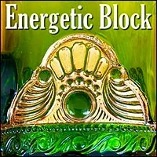
- REMOVE AN ENERGETIC BLOCK FROM YOUR GAMEWORLD- Matrix Code - GAMEINCU.21- By now probably you have experienced what it is like to detect and remove an energetic blocj in your own energetic body. The value of this is remarkable. We have discovered that gameworlds can also have energetic blocks. This experiment is to detect. Use an echolocator scanner to find what is locked up, invisible, compressed or unavailable to your gameworld. This could be any number of ressources such as time, energy, money, non-linearity, magic, intimacy, collaboration, love, possibility, and so on. - It can also be an energetic block if you have a physical gameworld, it can be on the physical land or building. Scan for where people don't go, scan for ghosts. - It can also be that something that keeps not happening, not finding land, etc. - The procedure for locating and removing the block is the same as the script in the energetic block website. In short, it includes greeting the block by saying "hello block" and one person could role play the block. "Thank you for saving the life of our gameworld" tell the shape, size, weight, temperature, purpose "Block, what is your purpose, when were you installed, when did you show up?" Look at the team, we have learned some things, It is no longer necessary for us to block ourselves from this resource. You are a valuable object. Another gameworld out there needs you to save their life. We are asking you to step out of our gameworld. Create a hole in the energetic space and let the block leave. Then fill up the empty space in your gameworld with the Bright Principles of your gameworld. Say them out loud, and let them fill up the space. Then celebrate the new shape of your gameworld. Have a non-alcoholic 5-hour celebration of exploring and experiencing and expressing the new unleashed potential. Post photographs from your party online and put the link for your photographs as proof of this experiment. - After doing this Experiment, please register Matrix Code - GAMEINCU.21in your free account at- StartOver.xyz. This Experiment is worth 3 Matrix Points. - ESTABLISH 'THE 10TH WOMAN' PRACTICE IN YOUR GAMEWORLD- Matrix Code - GAMEINCU.22- Meet with your team in your gameworld to answer questions or deal with issues at hand. Ones that you need to make decisions about. For each decision that you make, choose or select one person to be the 10th woman. The purpose of the 10th woman is to disagree 100% and investigate the result, the hypothesis if it went in the complete opposite direction of the dangers, the - Have the 10th woman present back the wisdom of that research. - Choose 1 or 2 of the offers, insights, and implement them experimentally to pay respect to the non-linear, unreasonable intelligence that has just been given to you. - If it's a big group, have a 10th team. One person for every 10 people. - Note 1: notice how people give away their center to one story or another. - Note 2: This experiment is not about blocking decisions, not about not moving or not making decisions, but to make the decision and implement the unreasonable insights also. - After doing this Experiment, please register Matrix Code - GAMEINCU.22in your free account at- StartOver.xyz. This Experiment is worth 1 Matrix Point. - CLARIFY EACH PERSON'S VALUE EXCHANGES IN YOUR GAMEWORLD- Matrix Code - GAMEINCU.23- Take the next step in identifying the value of each being's contribution merely from their presence. Identify each person's value and clarify it as appreciated. Spend 5 minutes with each person appreciating their exact value from being and make the next experiment in your gameworld of using this value as the currency within your gameworld. Review the Values website and realize that such values include kindness, capacity for engagement, encounter, mapping onto to somebody, tolerance for verbalizing impossible problems. There are huge amounts of value. Understand that each new value that you can distinguish increases the value in your gameworld. Figure ways to package and exchange this value amongst yourselves and stand behind other people's value. Consider making it a value that your gameworld exchanges with other gameworlds. Spend the next 5 minutes bragging about each person's value. Brag about how incredible... Importance and impressiveness of the respect. - After doing this Experiment, please register Matrix Code - GAMEINCU.23in your free account at- StartOver.xyz. This Experiment is worth 1 Matrix Point. - HEAL YOUR GAMEWORLD FROM ANTI-ZOMBIEISM- Matrix Code - GAMEINCU.24- You, and perhaps other in your Gameworld, have probably made a hidden life agreement to cure zombies, to bring them back to life. - This Experiment is to have a Research meeting to Identify in each person what their relationship is to Zombies. - A - Zombieis defined as a person who is not consciously aware of the values of the gameworlds they play in.- If yours is a transformational gameworld, it is probably in some way dedicated to curing Zombies. Capture people's secret commitment to curing zombies. Realize that such an attitude is arrogant, superiority, manipulation. Zombies do not want to be cured. Heal your gameworld from anti-zombieism. - One person should take clear notes about this process and then write and publish an article about your Gameworld healing its Anti-Zombieism, titled something like, 'How We Healed Anti-Zombieism In Our Project'. - P.S. Then clarify in your Codex what your Gameworld is - reallyabout.- After doing this Experiment, please register Matrix Code - GAMEINCU.24in your free account at- StartOver.xyz, giving the link to the article as Proof. This Experiment is worth 3 Matrix Point. - THE TRUE PURPOSE OF YOUR GAMEWORLD IS TO REPLACE YOURSELF- Matrix Code - GAMEINCU.25- This experiment has two PARTS. - PART 1:The first part is to immediately redesign your gameworlds the ones you are building and consciously playing in. Redesign the gameworlds so that you are replacing yourself. You are shifting the design that one of your true purposes is to replace yourself. the moment you do this the universe will open doors for you to have at least one apprentice, better 2-3, that are learning the value that you are creating because they have similar value, similar skills. It also includes as part of the gameworld design, teach your apprentices how to replace themselves and why so that they teach their apprentices how to do it. That has a ripple effect. This will allow you to actually navigate your gameworld into new territories that were unavailable before because you were previously occupied delivering your specific value. It might shift the value that your gameworld is providing so that another gameworld can move in.- PART 2:As you have built new awareness muscles to notice what is happening,- Take A Standfor replacing yourself. Your new job is to consult your replacement, to consult other Gameworlds, and to build out and occupy the next part of your Gameworld. With other Gameworlds, consult them to be adamant about replacing themselves with next culture- Gaian Gameworlds.- Proof: In 100 years, if your gameworld still exists, send us a message. - After doing this Experiment, please register Matrix Code - GAMEINCU.25in your free account at- StartOver.xyz. This Experiment is worth 4 Matrix Point.
- ESTABLISH 'THE 10TH WOMAN' PRACTICE IN YOUR GAMEWORLD- Matrix Code - GAMEINCU.22- Meet with your team in your gameworld to answer questions or deal with issues at hand. Ones that you need to make decisions about. For each decision that you make, choose or select one person to be the 10th woman. The purpose of the 10th woman is to disagree 100% and investigate the result, the hypothesis if it went in the complete opposite direction of the dangers, the - Have the 10th woman present back the wisdom of that research. - Choose 1 or 2 of the offers, insights, and implement them experimentally to pay respect to the non-linear, unreasonable intelligence that has just been given to you. - If it's a big group, have a 10th team. One person for every 10 people. - Note 1: notice how people give away their center to one story or another. - Note 2: This experiment is not about blocking decisions, not about not moving or not making decisions, but to make the decision and implement the unreasonable insights also. - After doing this Experiment, please register Matrix Code - GAMEINCU.22in your free account at- StartOver.xyz. This Experiment is worth 1 Matrix Point. - CLARIFY EACH PERSON'S VALUE EXCHANGES IN YOUR GAMEWORLD- Matrix Code - GAMEINCU.23- Take the next step in identifying the value of each being's contribution merely from their presence. Identify each person's value and clarify it as appreciated. Spend 5 minutes with each person appreciating their exact value from being and make the next experiment in your gameworld of using this value as the currency within your gameworld. Review the Values website and realize that such values include kindness, capacity for engagement, encounter, mapping onto to somebody, tolerance for verbalizing impossible problems. There are huge amounts of value. Understand that each new value that you can distinguish increases the value in your gameworld. Figure ways to package and exchange this value amongst yourselves and stand behind other people's value. Consider making it a value that your gameworld exchanges with other gameworlds. Spend the next 5 minutes bragging about each person's value. Brag about how incredible... Importance and impressiveness of the respect. - After doing this Experiment, please register Matrix Code - GAMEINCU.23in your free account at- StartOver.xyz. This Experiment is worth 1 Matrix Point. - HEAL YOUR GAMEWORLD FROM ANTI-ZOMBIEISM- Matrix Code - GAMEINCU.24- You, and perhaps other in your Gameworld, have probably made a hidden life agreement to cure zombies, to bring them back to life. - This Experiment is to have a Research meeting to Identify in each person what their relationship is to Zombies. - A - Zombieis defined as a person who is not consciously aware of the values of the gameworlds they play in.- If yours is a transformational gameworld, it is probably in some way dedicated to curing Zombies. Capture people's secret commitment to curing zombies. Realize that such an attitude is arrogant, superiority, manipulation. Zombies do not want to be cured. Heal your gameworld from anti-zombieism. - One person should take clear notes about this process and then write and publish an article about your Gameworld healing its Anti-Zombieism, titled something like, 'How We Healed Anti-Zombieism In Our Project'. - P.S. Then clarify in your Codex what your Gameworld is - reallyabout.- After doing this Experiment, please register Matrix Code - GAMEINCU.24in your free account at- StartOver.xyz, giving the link to the article as Proof. This Experiment is worth 3 Matrix Point. - THE TRUE PURPOSE OF YOUR GAMEWORLD IS TO REPLACE YOURSELF- Matrix Code - GAMEINCU.25- This experiment has two PARTS. - PART 1:The first part is to immediately redesign your gameworlds the ones you are building and consciously playing in. Redesign the gameworlds so that you are replacing yourself. You are shifting the design that one of your true purposes is to replace yourself. the moment you do this the universe will open doors for you to have at least one apprentice, better 2-3, that are learning the value that you are creating because they have similar value, similar skills. It also includes as part of the gameworld design, teach your apprentices how to replace themselves and why so that they teach their apprentices how to do it. That has a ripple effect. This will allow you to actually navigate your gameworld into new territories that were unavailable before because you were previously occupied delivering your specific value. It might shift the value that your gameworld is providing so that another gameworld can move in.- PART 2:As you have built new awareness muscles to notice what is happening,- Take A Standfor replacing yourself. Your new job is to consult your replacement, to consult other Gameworlds, and to build out and occupy the next part of your Gameworld. With other Gameworlds, consult them to be adamant about replacing themselves with next culture- Gaian Gameworlds.- Proof: In 100 years, if your gameworld still exists, send us a message. - After doing this Experiment, please register Matrix Code - GAMEINCU.25in your free account at- StartOver.xyz. This Experiment is worth 4 Matrix Point. - CREATE POWER BY FLOWING POWER IN YOUR GAMEWORLD- Matrix Code - GAMEINCU.26- Part 1:within your gameworld. For the next 2 weeks, 5 times a day, each person in your gameworld has the objective of flowing power to every other individual in the gameworld. This will expand each person's resources and charge up their battery for collaborating within the gameworld.- This could become a general custom adopted by your gameworld culture. Flow power to each one of the other people. Includes negotiating power flowing intimacies such as, " - Your work is so important to me I am going to spread news about it on 5 other platforms." For example, you could recommend the other person's Gameworld in your- Possibility Coachingsessions, or at your next- EHP Dojo. All these ways you are flowing power through actual negotiations. It's not an exchange. You flow power to consciously create an imbalance in your favor. Notice how Flowing Power to other people and other Gameworlds creates more power within your Gameworld and between your Gameworld and other Gameworlds.- Part 2:Flow power to colleagues in other Gameworlds. Do NOT do this with messaging. Instead, for example, tell a story about them and give a link to their work in your newsletter, or at your next Public- WorkTalk. Tell another Gameworld representative about another Gameworld besides your own. This provides Value the other Gameworlds and helps build 'critical connections'.- One of the purposes of a next-culture Gameworld is to create critical connections between communities of practice to create a field of influence for the emergence of Archearchy. - After doing this Experiment, please register Matrix Code - GAMEINCU.26in your free account at- StartOver.xyz. As proof, please list at least one of the other Gameworlds with which you have created a 'critical connection'. This Experiment is worth 3 Matrix Points. - CREATE MONEY BY FLOWING MONEY INTO OTHER GAMEWORLDS- Matrix Code - GAMEINCU.27- Certain actions create an imbalance that cause more Money Loops to flow through your bank account. It does not cost the money anything to add your bank account into its Money Loop path. This Experiment is to open a - Doorwayfor each person in your Gameworld to create an imbalance in their favor by making an interest-free loan of 25$ to a Kiva borrower somewhere in the world. This magical act takes only a few minutes, and can have magnificent consequences. If you need to later on, after the borrower pays back the loan, you can take your money back out of Kiva.- To do this Experiment, go to - https://www.kiva.org/invitedto/archearchy_kiva/by/clinton1784, open your account with your name and email address, then select from the many varieties of borrowers around the world and complete your loan.- After doing this Experiment, each person who makes an Archearchy Kiva Loan can register Matrix Code - GAMEINCU.27in your free account at- StartOver.xyz, naming the country of the person or group you loaned to as Proof. This Experiment is worth 3 Matrix Points.
- CREATE POWER BY FLOWING POWER IN YOUR GAMEWORLD- Matrix Code - GAMEINCU.26- Part 1:within your gameworld. For the next 2 weeks, 5 times a day, each person in your gameworld has the objective of flowing power to every other individual in the gameworld. This will expand each person's resources and charge up their battery for collaborating within the gameworld.- This could become a general custom adopted by your gameworld culture. Flow power to each one of the other people. Includes negotiating power flowing intimacies such as, " - Your work is so important to me I am going to spread news about it on 5 other platforms." For example, you could recommend the other person's Gameworld in your- Possibility Coachingsessions, or at your next- EHP Dojo. All these ways you are flowing power through actual negotiations. It's not an exchange. You flow power to consciously create an imbalance in your favor. Notice how Flowing Power to other people and other Gameworlds creates more power within your Gameworld and between your Gameworld and other Gameworlds.- Part 2:Flow power to colleagues in other Gameworlds. Do NOT do this with messaging. Instead, for example, tell a story about them and give a link to their work in your newsletter, or at your next Public- WorkTalk. Tell another Gameworld representative about another Gameworld besides your own. This provides Value the other Gameworlds and helps build 'critical connections'.- One of the purposes of a next-culture Gameworld is to create critical connections between communities of practice to create a field of influence for the emergence of Archearchy. - After doing this Experiment, please register Matrix Code - GAMEINCU.26in your free account at- StartOver.xyz. As proof, please list at least one of the other Gameworlds with which you have created a 'critical connection'. This Experiment is worth 3 Matrix Points. - CREATE MONEY BY FLOWING MONEY INTO OTHER GAMEWORLDS- Matrix Code - GAMEINCU.27- Certain actions create an imbalance that cause more Money Loops to flow through your bank account. It does not cost the money anything to add your bank account into its Money Loop path. This Experiment is to open a - Doorwayfor each person in your Gameworld to create an imbalance in their favor by making an interest-free loan of 25$ to a Kiva borrower somewhere in the world. This magical act takes only a few minutes, and can have magnificent consequences. If you need to later on, after the borrower pays back the loan, you can take your money back out of Kiva.- To do this Experiment, go to - https://www.kiva.org/invitedto/archearchy_kiva/by/clinton1784, open your account with your name and email address, then select from the many varieties of borrowers around the world and complete your loan.- After doing this Experiment, each person who makes an Archearchy Kiva Loan can register Matrix Code - GAMEINCU.27in your free account at- StartOver.xyz, naming the country of the person or group you loaned to as Proof. This Experiment is worth 3 Matrix Points.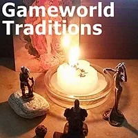
- ELIMINATE ONE OF YOUR GAMEWORLD'S UNCONSCIOUS TRADITIONS- Matrix Code - GAMEINCU.28- Bring the Infinity Ring of your Gameworld together for a Research Team meeting. Bring forth the list of your Gameworld's Traditions from your Codex. This investigation will spread your Team's awareness the field of all Traditions your Gameworld has consciously or unconsciously adopted. In particular focus on the unconscious Traditions, which of course is not easy, because you are trying to see what is not there. The HINT for this is to sense into the consequences and side-effects that ARE there, and follow them back to their source, which will be the secretly agreed-upon unconscious Tradition. List your Unconscious Traditions, at least three of them. Choose one. Consciously decide to eliminate this one Unconscious Tradition for three months. Announce this in your newsletter or your next General Assembly meeting as an Experiment of your Gameworld.- Notice what happens in your Gameworld. What kinds of ripple-effects occur? - After 3 months, have another Infinity Ring meeting and decide if you want to leave that one Unconscious Tradition Eliminated. Also decide if you want to keep adopt the Tradition of every month (or every 3 months...) eliminating one of your Gameworld's Unconscious Traditions. - After doing this Experiment, please register Matrix Code - GAMEINCU.28in your free account at- StartOver.xyz, naming the eliminated Unconscious Tradition as Proof. This Experiment is worth 5 Matrix Points. - Matrix Code - GAMEINCU.27 - Matrix Code - GAMEINCU.28 - Matrix Code - GAMEINCU.29
- Matrix Code - GAMEINCU.28 - Matrix Code - GAMEINCU.29 - Matrix Code - GAMEINCU.30 - Matrix Code - GAMEINCU.31 - Matrix Code - GAMEINCU.32
- Matrix Code - GAMEINCU.30 - Matrix Code - GAMEINCU.31 - Matrix Code - GAMEINCU.32 - Matrix Code - GAMEINCU.33
- Matrix Code - GAMEINCU.33 - Matrix Code - GAMEINCU.34
- Matrix Code - GAMEINCU.34 - Matrix Code - GAMEINCU.35 - Matrix Code - GAMEINCU.36
- Matrix Code - GAMEINCU.35 - Matrix Code - GAMEINCU.36 - 7Matrix Code- GAMEINCU.37 - Matrix Code - GAMEINCU.38
- 7Matrix Code- GAMEINCU.37 - Matrix Code - GAMEINCU.38 - Matrix Code - GAMEINCU.39 - Matrix Code - GAMEINCU.40 - Matrix Code - GAMEINCU.41
- Matrix Code - GAMEINCU.39 - Matrix Code - GAMEINCU.40 - Matrix Code - GAMEINCU.41 - Matrix Code - GAMEINCU.42 - Matrix Code - GAMEINCU.43 - Matrix Code - GAMEINCU.44
- Matrix Code - GAMEINCU.42 - Matrix Code - GAMEINCU.43 - Matrix Code - GAMEINCU.44 - Matrix Code - GAMEINCU.45
- Matrix Code - GAMEINCU.45 - Matrix Code - GAMEINCU.46 - Matrix Code - GAMEINCU.47 - Matrix Code - GAMEINCU.48
- Matrix Code - GAMEINCU.46 - Matrix Code - GAMEINCU.47 - Matrix Code - GAMEINCU.48 - Matrix Code - GAMEINCU.49
- Matrix Code - GAMEINCU.49 - Matrix Code - GAMEINCU.50
- Matrix Code - GAMEINCU.50 - Matrix Code - GAMEINCU.51 - Matrix Code - GAMEINCU.52 - Matrix Code - GAMEINCU.53
- Matrix Code - GAMEINCU.51 - Matrix Code - GAMEINCU.52 - Matrix Code - GAMEINCU.53 - Matrix Code - GAMEINCU.54
- Matrix Code - GAMEINCU.54 - Matrix Code - GAMEINCU.55
- Matrix Code - GAMEINCU.55 - Matrix Code - GAMEINCU.56 - Matrix Code - GAMEINCU.57 - Matrix Code - GAMEINCU.58 - Matrix Code - GAMEINCU.59 - Matrix Code - GAMEINCU.60 - Matrix Code - GAMEINCU.61 - Matrix Code - GAMEINCU.62 - Matrix Code - GAMEINCU.63 - Matrix Code - GAMEINCU.64
- Matrix Code - GAMEINCU.56 - Matrix Code - GAMEINCU.57 - Matrix Code - GAMEINCU.58 - Matrix Code - GAMEINCU.59 - Matrix Code - GAMEINCU.60 - Matrix Code - GAMEINCU.61 - Matrix Code - GAMEINCU.62 - Matrix Code - GAMEINCU.63 - Matrix Code - GAMEINCU.64 - Matrix Code - GAMEINCU.65 - Matrix Code - GAMEINCU.66 - Matrix Code - GAMEINCU.67
- Matrix Code - GAMEINCU.65 - Matrix Code - GAMEINCU.66 - Matrix Code - GAMEINCU.67 - Matrix Code - GAMEINCU.68
- Matrix Code - GAMEINCU.68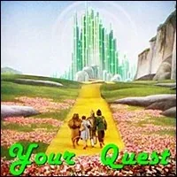
- Matrix Code - GAMEINCU.69 - Matrix Code - GAMEINCU.70 - Matrix Code - GAMEINCU.71 - Matrix Code - GAMEINCU.72 - Matrix Code - GAMEINCU.73
- Matrix Code - GAMEINCU.72 - Matrix Code - GAMEINCU.73 - Matrix Code - GAMEINCU.74
- NOTE:This website is a- Bubble in the Bubble Map- StartOver.xyz- doorway- experiments- upgrade your thoughtware- point of origin- create- possibility- knowledge- about. Your- thoughtware- with. When you- change your thoughtware- liquid state- reorganizes- feelings- emotions- upgrading your thoughtware- build matrix- consciousness (archived — not captured)- low drama- reactivity- collectively build- responsibly- GAMEINCU.00to log your Matrix Point for reading this website on- StartOver.xyz
- Matrix Code - GAMEINCU.74
- NOTE:This website is a- Bubble in the Bubble Map- StartOver.xyz- doorway- experiments- upgrade your thoughtware- point of origin- create- possibility- knowledge- about. Your- thoughtware- with. When you- change your thoughtware- liquid state- reorganizes- feelings- emotions- upgrading your thoughtware- build matrix- consciousness (archived — not captured)- low drama- reactivity- collectively build- responsibly- GAMEINCU.00to log your Matrix Point for reading this website on- StartOver.xyz